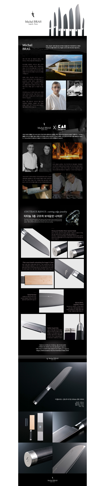
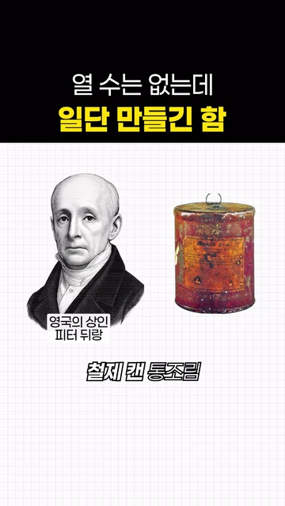
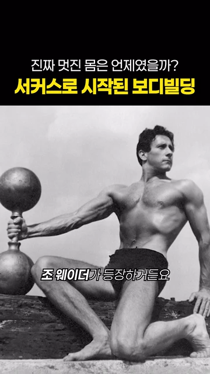

작업
게임, 상세페이지, 영상과 웹앱을 만들었습니다.



정보형 쇼츠
익숙한 소재의 뒷이야기를 짧은 영상으로. 소재 선정부터 대본, 편집, 업로드까지 맡았습니다.
웹앱 3종
직접 기획하고 AI와 제작했습니다. 각 웹앱을 새 탭에서 열어볼 수 있습니다.
AI와 일하는 방식
기획과 최종 판단은 직접 맡습니다.
- 직접
기획
목표와 기준을 정합니다
무엇을 만들지, 무엇을 지킬지
- AI 협업
제작
역할을 나눠 만듭니다
코드, 이미지, 영상 소스, 초안
- 직접
검수
확인하고 최종 선택합니다
오류 수정, 완성도, 일관성
개발
 Codex
Codex VS Code
VS Code
- AI 도움
- 코드 작성 · 오류 원인 탐색
- 직접 담당
- 기능과 기준 설정 · 실제 동작 확인
기획 검수
 Claude
Claude
- AI 도움
- 기획 정리 · 결과물 검토 보조
- 직접 담당
- 목표와 검수 기준 설정 · 수정 방향 결정
이미지·영상
 ChatGPT
ChatGPT Seedance
Seedance
- AI 도움
- 이미지 · 영상 소스 생성
- 직접 담당
- 표현 방향 설정 · 결과물 확인과 선택
리서치·콘텐츠
자료에서 콘텐츠까지
- AI 도움
- 시장 정보·리뷰 정리 · 대본과 문구 초안
- 직접 담당
- 소재 선정 · 내용 확인과 최종 편집
기준에 맞을 때까지 수정하고 다시 확인합니다.
경력
직무와 가까운 경력을 먼저 놓았습니다. 행을 누르면 상세가 열립니다.
2023.04 — 2023.1211번가 카탈로그팀뷰티·패션 상품정보 검수검수
상품정보와 카테고리 매칭을 확인하고, 기준에 맞지 않는 정보를 검수했습니다.
소속: 에이치앤티아웃소싱시스템2021.03 — 2022.05TikTok 콘텐츠 모니터링정책 기준 검수, 분류검수
정책 기준에 따라 영상의 적합성과 위반 여부를 검수하고 태그를 적용했습니다.
소속: ㈜트랜스코스모스2019.10 — 2020.01스피드런웹디자인, 상품 등록제작운영
스토어팜·11번가·옥션·G마켓의 상품 등록과 상세페이지 제작·수정을 담당했습니다.
온라인 쇼핑몰2016.12 — 2018.11칼이쓰마웹디자인, 온라인몰 운영제작운영
상세페이지 기획·디자인과 사방넷 상품등록, 고도몰·스토어팜·오픈마켓 운영을 맡았습니다. 백화점몰 기획전, 주문·발주, CS, SNS 프로모션도 함께 진행했습니다. 월말 사방넷·자사몰 매출을 취합해 상급자에게 보고했습니다.
온라인 쇼핑몰2015.10 — 2016.08비스컨애드웹디자인, HTML제작
사이트 유지보수, 국립중앙도서관 웹진·뉴스레터 디자인 관리와 온라인 마케팅 업무를 경험했습니다.
웹디자인그 밖의 경력 5건
2025.10 — 2026.06쿠팡풀필먼트서비스입고 공정, 상품 분류·전산 확인운영
입고 공정에서 상품을 분류하고, 실물 상품과 전산 정보를 확인했습니다.
IB, 사원2023.02 — 2023.05배달의민족 라이더 지원센터고객지원, CS운영
라이더 문의 안내와 민원 대응, 채팅 상담을 담당했습니다. 일부 기간 병행 근무.
소속: (주)케이에스한국고용2022.10 — 2023.02쿠팡풀필먼트서비스재고 조사, 오류 상품 확인운영
재고를 조사하고 오류 상품 확인과 전산 처리 업무를 맡았습니다.
ICQA2014.10 — 2015.01넌센스컴퍼니공연 기획·홍보, 예매처 관리운영
공연 기획·홍보와 예매처 관리 업무를 맡았습니다.
공연 운영2012.09 — 2014.04소리아트홀공연 홍보, 예매·현장 운영운영
공연 기획·홍보, 예매처 관리, 매표·공연장 운영과 프로모션을 경험했습니다.
공연 운영학력, 수상, 자격, 교육
- 학력
- 서울예술대학 극작과 졸업
- 수상
- KTV 영상콘텐츠 공모전 동상2011, 〈익숙하고도 낯선 시간 / Vintage 2011〉, 한국정책방송원장
- 자격
- GTQ 포토샵 1급2015.08, 한국생산성본부(KPC)
- 교육
- 프리미어프로 영상편집 첫걸음 시작하기2024.01 — 2024.02, 패스트캠퍼스강남학원, 영상편집 기초
- 교육
- 반응형 모바일 웹 UI/UX 실무과정2015.05 — 2015.10, 하이미디어컴퓨터학원, HTML5·CSS3